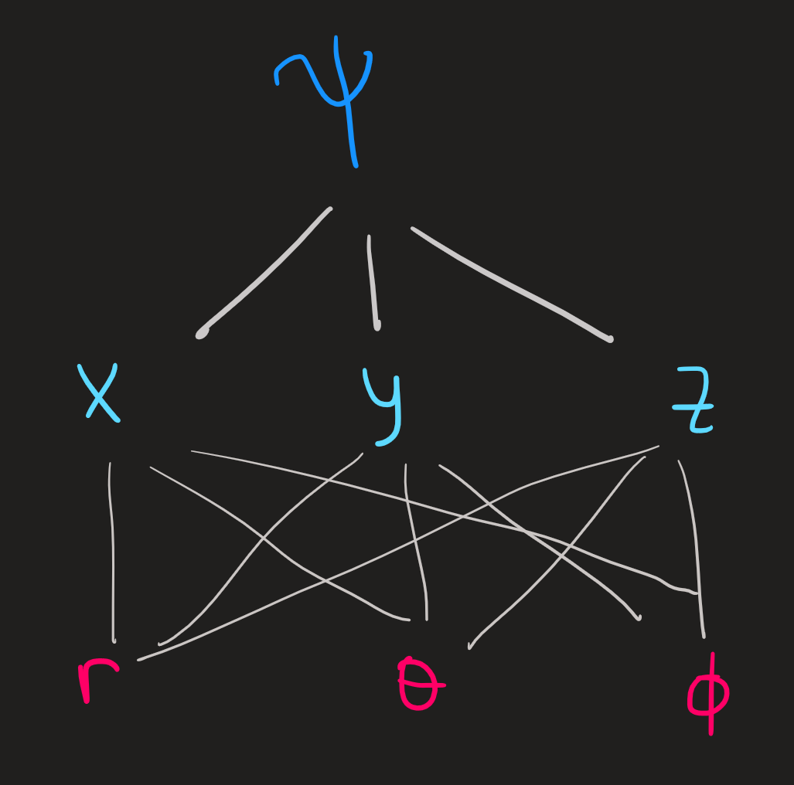

Angular Momentum in QM
What is angular momentum in QM?
Classical Angular momentum is defined as \[ \mathbf{L}=\mathbf{r}\times \mathbf{p} \] In components we have for example: \[ L_z=xp_y-p_yx \] To obtain the QM angular momentum we replace the positions coordinates \(x,y,z\) and momentum \(p_x,p_y,p_z\) by the operators \(X,Y,Z\) and \(P_x,P_y,P_z\). This gives us:
\[ \mathbf{L}=\mathbf{R}\times \mathbf{P} \] where \(\mathbf{R}=(X,Y,Z)\) and \(\mathbf{P}=(P_x,P_y,P_z)\) are vectors whose entries are operators. From the three components of \(\mathbf{L}\) we get the following commutations relations:
\[ [L_x,L_y]=i\hbar L_z\qquad [L_y,L_z]=i\hbar L_x\qquad [L_z,L_x]=i\hbar L_y\qquad [L_i,L_j]=0\quad \text{for}\ i\not= j \]
as a consequence of \([X,P_x]=i\hbar\), etc. From a different perspective we can say that the angular momentum operators satisfy these three commutation “equations”. In QM one wants to talk about more general angular momentum, for example spin angular momentum, it has no classical analog and hence is not defined explicitly as \(\mathbf{L}=\mathbf{r}\times \mathbf{p}\). However one can still say that whatever spin angular momentum operator is, it must satisfy the previous three commutations relation. Hence we introduce a general angular momentum \(J\) which obeys the rules
\[ [J_x,J_y]=i\hbar J_z\qquad [J_y,J_z]=i\hbar J_x\qquad [J_z,J_x]=i\hbar J_y\qquad [J_i,J_j]=0\quad \text{for}\ i\not= j \tag{1}\]
\(\mathbf{J}\) can be either the orbital angular momentum of a particle or the spin angular momentum etc, since all quantum angular momenta has commutation relations of that form. Given \(\mathbf{J}\) we can introduce now \(J^2\), defined as:
\[ J^2=J_x^2+J_y^2+J_z^2 \]
Moreover, we can easily show that this operator commute with the three components of \(J\):
\[ [J^2,J_x]=0\qquad[J^2,J_y]=0\qquad[J^2,J_z]=0 \tag{2}\]
for example, using Equation 1 we find:
\[ \begin{align} [J^2,J_z]&=[J_x^2+J_y^2+J_z^2,J_z]\\ &=[J_x^2,J_z]+[J_y^2,J_z]+[J_z^2,J_z]\\ &=0+0+0\\ &=0 \end{align} \]
That fact that \(J^2\) commutes with \(J_z\) will be of great importance, because it guarantees one can find (and thus define) a set of basis kets in the Hilbert space that are simultaneously eigenstates of both. Moreover, since the commuting operators are Hermitian (we say in QM they are observables) the eigenstates of the operators can be made orthogonal and the eigenvalues are real. What this entails for our commuting observables, is that not only we can find a set of common eigenvectors, those can be made orthogonal and the two eigenvalues (one for \(J^2\), the other for \(J_z\)) are real.
Goal
Define a basis of eigenstates common to \(J^2\) and \(J_z\) for our Hilbert Space.
Why?
One of the most important goals in QM is to find the eigenstates of the Hamiltonian of the system, paraphrased differently, we say, we want to find the basis of eigenstates of \(H\). Imagine we have an Hamiltonian which commutes with \(J^2\) and \(J_z\), then we know we can find a basis of eigenstates common to the three operators. Knowing already what is the eigenbasis common to \(\{J^2,J_z\}\) greatly facilitates finding the eigenstates of \(H\). The three operators (observables) constitute a complete set of commuting observables (CSCO) \[ \{H,J^2,J_z\} \] and we want to find its eigenbasis.
Raising and lowering operators
By definition we have: \[ J_+=J_x+iJ_y\qquad J_-=J_x-iJ_y\qquad \] There are now plenty commutations relations we can derive from these two operators in conjunction with the \(J^2\) and \(J\), but the ultimate consequences of these relations is that they tell us how to organize the eigenbasis of \(\{J^2,J_z\}\), see next section and Figure 1 .
These definitions allow us to write:
\[ J_x = \frac{1}{2}(J_++J_-) \qquad J_y = \frac{1}{2i}(J_+-J_-) \tag{3}\]
which will be useful later.
Eigenvalues and eigenvectors
The eigenvalues of \(J^2\) are of the form \(j(j+1)\hbar^2\) and those of \(J_z\) are \(m\hbar\) where \(j\) is a positive integer or semi-integer and \(-j\leq m\leq j\) in steps of \(1\). We use the \(j\) and \(m\) to label the eigenbasis:
\[ \begin{align}&J^2\ket{n,j,m}=j(j+1)\hbar^2\ket{n,j,m}\\&J_z\ket{n,j,m}=m\hbar\ket{n,j,m}\end{align} \tag{4}\]
The only values that \(j\) can take are \(0\), \(1/2\), \(3/2\), \(2\), etc; while \(n\) can either be an integer or a continuous number that we use to label and thus distinguish the kets in the basis.

Each blue dot in the picture corresponds to basis vector \(\ket{n,j,m}\), the horizontal boxes show subspaces \(\mathcal{E}(n,j)\) of the Hilbert space. From a different perspective we have:

Within each one of these, the operators \(J_\pm\) links each vector of the basis, specifically we have:
\[ J_\pm \ket{n,j,m}=\hbar \sqrt{j(j+1)-m(m\pm 1)}\ket{n,j,m\pm 1} \tag{5}\]
a formula which is derived from commutation relations (through a rather complicated path). The names raising and lowering operators comes form the fact that \(m\) is either raised by \(+1\) or lowered by \(-1\) each time \(J_\pm\) acts.
From the first equation in Equation 4 we notice that for a given value of \(n\) and \(j\), for example \(n=1\) and \(j=1\), then \(\{|1,1,1\rangle,|1,1,0\rangle,|1,1,-1\rangle\}\) are eigenvectors of \(J^2\) with the same eigenvalue \(1(1+1)\hbar^2\) , we therefore say the eigenvalue is 3-degenate, or that the space \(\mathcal{E}(n=1,j=1)\) spanned by this basis is 3-degenerate. We distinguish the 3 eigenvectors by the \(J_z\) eigenvalue \(m\hbar\).
Matrix Representation
To compute the matrix representation of an operator we have to compute how the operator acts on the space basis. For example, let us choose the subspace of eigenvectors of \(J^2\) with eigenvalue \(1(1+1)\hbar^2\) and a given \(n\):
\[ \mathcal{E}(n,l=1)=\text{span}\{|n,1,1\rangle,|n,1,0\rangle,|n,1,-1\rangle\} \]
see Figure 1 .
We drop the \(n\) index for easier read of the formulas. Later we will recover it.
When we act with \(J_x\) on this basis, what is the output? Answer:
\[ \begin{align} J_x|1,1\rangle &= \frac{1}{2}(J_+ +J_-)|1,1\rangle\\ &=\frac{1}{2}J_+|1,1\rangle+\frac{1}{2}J_-|1,1\rangle\\ &=\frac{\hbar}{2}\sqrt{1(1+1)-1(1+1)}|1,2\rangle+\frac{\hbar}{2}\sqrt{1(1+1)-1(1-1)}|1,0\rangle\\ &=\frac{\hbar}{\sqrt{2}}|1,0\rangle \end{align} \tag{6}\]
We conclude that when \(J_x\) acts on the basis element \(|1,1\rangle\) it outputs \(|1,0\rangle\) times a constant, notice the ket $|1,0\rangle $ lives in \(\mathcal{E}(j=1)\). Let us see now what happens when \(J_x\) acts on \(|1,0\rangle\):
\[ \begin{align} J_x|1,0\rangle &= \frac{1}{2}(J_++J_-)|1,0\rangle\\ &=\frac{\hbar}{2}\sqrt{1(1+1)-0(0+1)}|1,1\rangle+\frac{\hbar}{2}\sqrt{1(1+1)-0(0-1)}|1,1\rangle|1,-1\rangle\\ &=\frac{\hbar}{\sqrt{2}}(|1,1\rangle+|1,-1\rangle) \end{align} \tag{7}\]
As \(J_x\) acts on \(|1,0\rangle\) it gives a linear combination \(|1,1\rangle+|1,-1\rangle\) of basis vectors, which in turn also lives in \(\mathcal{E}(j=1)\).
And finally,a similar calculation would show:
\[ J_x|1,-1\rangle =\frac{\hbar}{\sqrt{2}}|1,0\rangle \tag{8}\]
Again, the input \(|1,-1\rangle\) is in \(\mathcal {E}(j=1)\) and so is the output \(|1,0\rangle\).
The calculation above show clearly that the action of \(J_x\) is stuck in \(\mathcal{E}(j=1)\), confirming the prediction already made from the fact that \([J^2,J_x]=0\).
The results in Equation 6, Equation 7 and Equation 8 allow us to write:
\[ J_x = \sum_{m,m'=1,0,-1}|1,m\rangle\langle1,m|J_x|1,m'\rangle\langle1,m'| \]
explicitly as
\[ \begin{align} J_x &= \frac{\hbar}{\sqrt{2}}\left(|1,0\rangle\langle 1,1|+|1,1\rangle\langle 1,0|+|1,-1\rangle\langle 1,0|+|1,0\rangle\langle 1,-1|\right) \end{align} \]
which in turn can be rewritten using using matrix notation as:

Repeating these calculation for \(J_y\) and \(J_z\) yields the results:

The matrix for \(J_z\) is diagonal since the basis elements we choose are eigenvectors, the diagonal elements are the the three \(m\hbar\) eigenvalues; and since they are also eigenvectors of \(J^2\) we find a diagonal with the \(1(1+1)\hbar^2=2\hbar^2\) eigenvalues repeated three times:

All of above assume a given index \(n\) was chosen.
The Orbital Angular Momentum
So far we described the framework of a generic angular momentum, which followed solely from its commutation relations; we want now to see a particular example of the \(J^2\) and \(J_z\) operators, namely, when they are the magnitude-squared of the orbital angular momentum of a particle and its z-component, to be explicit, let:
\[ \begin{align} &J_x := YP_z-ZP_y\\ &J_y:=ZP_x-XP_z\\ &J_z:= XP_y-YP_x \\ &J^2:=J_x^2+J_y^2+J_z^2 \end{align} \tag{9}\]
The commutation relations Equation 1 and Equation 2 that we assumed in previous sections for the symbols on the lhs of Equation 9 also hold for the symbols on the rhs
In other words, the explicit form of \(J_x\), \(J_y\) and \(J_z\) that we defined in Equation 9, by itself satisfies Equation 1 and Equation 2 provided:
\[ [X,P_x] = [Y,P_y] = [Z,P_z]=i\hbar \]
As an example:
\[ \begin{align} [J_x,J_y]&=[YP_z-ZP_y,ZP_x-XP_z]\\ &=[YP_z,ZP_x]-[YP_z,XP_z]-[ZP_y,ZP_x]+[ZP_y,XP_z]\\ &=Y[P_z,Z]P_x -0-0+X[Z,P_z]P_y\\ &=-i\hbar YP_x+i\hbar XP_y\\ &=i\hbar (XP_y-YP_x)\\ &=i\hbar J_z \end{align} \tag{10}\]
just as we assumed in Equation 1 . Analogous calculation show our definitions satisfies the remaining commutation relations
It is traditional to use the symbols \(L_x\), \(L_y\) ,\(L_z\) and \(L^2\) in place of \(J_x\), \(J_y\) ,\(J_z\) and \(J^2\) when speaking about the orbital angular momentum. Recall the former notation is used for a generic angular momentum, not necessarily the orbital one.
The rhs of Equation 9 together with the choice of the position basis \(\{|x,y,z\rangle\}\) allow us to give the position representation of the eigenvalue-eigenvector equations we saw in Equation 4:
\[ \begin{align} &\langle x,y,z|L^2\ket{l,m}=l(l+1)\hbar^2\langle x,y,z|\ket{l,m}\\ &\langle x,y,z|L_z\ket{l,m}=m\hbar\langle x,y,z|\ket{l,m} \end{align} \tag{11}\]
Substituting Equation 9 we find:
\[ \begin{align}&\langle x,y,z|(L_x^2+L_y^2+L_z^2)\ket{l,m}=l(l+1)\hbar^2\langle x,y,z|\ket{l,m}\\ &\langle x,y,z|(XP_y-YP_x)\ket{l,m}=m\hbar\langle x,y,z|\ket{l,m}\end{align} \tag{12}\]
The \(X\) and \(P_x\) operators have the following representation in the \(\{|x\rangle\}\) basis:
\[ \langle x|X|\psi\rangle = x\langle x|\psi\rangle \qquad \langle x|P_x|\psi\rangle = \frac{\hbar}{i}\frac{\partial}{\partial x}\langle x|\psi\rangle \]
The second equation in Equation 12 we find:
\[ \begin{align} \langle x,y,z|L_z|\psi\rangle &= \langle x,y,z|(XP_y-YP_x)|\psi\rangle\\ &= \langle x,y,z|(xP_y-yP_x)|\psi\rangle\\ &= \langle x,y,z|(x\frac{\hbar}{i}\frac{\partial}{\partial y}-y\frac{\hbar}{i}\frac{\partial}{\partial x})|\psi\rangle\\ &= \frac{\hbar}{i}\left(x\frac{\partial}{\partial y}-y\frac{\partial}{\partial x}\right)\langle x,y,z|\psi\rangle\\ &= \frac{\hbar}{i}\left(x\frac{\partial}{\partial y}-y\frac{\partial}{\partial x}\right)\psi(x,y,z) \end{align} \] Therefore, in the position basis, the \(L_z\) operator acts on functions \(\psi(x,y,z)\) as the operation:
\[ L_z \rightsquigarrow \frac{\hbar}{i}\left(x\frac{\partial}{\partial y}-y\frac{\partial}{\partial x}\right) \tag{13}\]
Similarly we find:
\[ L_x \rightsquigarrow \frac{\hbar}{i}\left(y\frac{\partial}{\partial z}-z\frac{\partial}{\partial y}\right) \qquad L_y \rightsquigarrow \frac{\hbar}{i}\left(z\frac{\partial}{\partial x}-x\frac{\partial}{\partial z}\right) \tag{14}\]
We could substitute the rhs of Equation 13 and Equation 14 into the commutation relations and run an analogous calculation to Equation 10, the would conclude that they indeed satisfy those equations as well.
It will be useful to change from cartesian coordinates \(x,y,z\) into polar coordinates \(r,\theta,\phi\). The map between these coordinates is established by the equations:
\[ \begin{align} & x = r \sin \theta \cos \phi\\ & y = r \sin \theta \sin \phi\\ & z = r \cos \theta \end{align} \]
provided \(r\geq 0\), \(0\leq\theta\leq\pi\) and \(0\leq\phi< 2\pi\)
To convert Equation 13 and Equation 14 into polar coordinates we proceed as follows:
- Draw a diagram:

- Relate the derivatives in cartesian and polar coordinates encoded in the diagram:
\[ \begin{pmatrix} \partial_r\psi\\ \partial_\theta\psi\\ \partial_\phi\psi \end{pmatrix} = \begin{pmatrix} \partial_r x & \partial_r y & \partial_r z\\ \partial_\theta x & \partial_\theta y & \partial_\theta z\\ \partial_\phi x & \partial_\phi y & \partial_\phi z \end{pmatrix} \begin{pmatrix} \partial_x\psi\\ \partial_y \psi\\ \partial_z \psi \end{pmatrix} \tag{15}\]
- Compute the matrix (Easy)
\[ \begin{pmatrix} \sin\theta \cos\phi & \sin\theta \sin \phi & \cos\theta\\ r \cos\theta \cos\phi & r \cos\theta \sin \phi & -r \sin \theta\\ -r\sin\theta \sin \phi & r \sin\theta \cos\phi & 0 \end{pmatrix} \]
- Invert the system Equation 15 (Hard, use Mathematica)
\[ \begin{pmatrix} \partial_x\psi\\ \partial_y\psi\\ \partial_z\psi \end{pmatrix} = \begin{pmatrix} \sin\theta \cos \phi & r^{-1}\cos\theta \cos\phi & -(r\sin\theta)^{-1} \sin\phi\\ \sin\theta \sin \phi & r^{-1}\cos\theta \sin\phi & (r\sin\theta)^{-1} \cos\phi\\ \cos\theta & -r^{-1}\sin\theta & 0 \end{pmatrix} \begin{pmatrix} \partial_r\psi\\ \partial_\theta \psi\\ \partial_\phi \psi \end{pmatrix} \]
Substitute the results into Equation 13 and Equation 14 and simplify gives:
\[ \begin{align} &L_x \rightsquigarrow i\hbar\left(\sin\phi \frac{\partial}{\partial \theta}+\frac{\cos\phi}{\tan\theta} \frac{\partial}{\partial \phi}\right)\\ &L_y \rightsquigarrow i\hbar\left(-\cos\phi \frac{\partial}{\partial \theta}+\frac{\sin\phi}{\tan\theta} \frac{\partial}{\partial \phi}\right)\\ &Lz \rightsquigarrow \frac{\hbar}{i} \frac{\partial}{\partial \phi} \end{align} \]
From these results we can now derive the action of \(L^2\) in polar coordinates:
\[ \begin{align} L^2\psi &= L_x^2\psi + L_y^2\psi+L_z^2\psi\\ &=(i\hbar)^2\left(\sin\phi \frac{\partial}{\partial \theta}+\frac{\cos\phi}{\tan\theta} \frac{\partial}{\partial \phi}\right)^2\psi +(i\hbar)^2\left(-\cos\phi \frac{\partial}{\partial \theta}+\frac{\sin\phi}{\tan\theta} \frac{\partial}{\partial \phi}\right)^2\psi+ \left(\frac{\hbar}{i}\right)^2 \frac{\partial^2}{\partial \phi^2}\psi \end{align} \tag{16}\] Now we need to expand each square, the first becomes:
\[ (i\hbar)^2\left(\sin^2\phi \frac{\partial^2\psi}{\partial \theta^2}+ \frac{\cos^2\phi}{\tan^2\theta}\frac{\partial^2\psi}{\partial \phi^2}-\frac{\sin\phi\cos\phi}{\sin^2\theta}\frac{\partial \psi}{\partial \phi}+\frac{\sin\phi\cos\phi}{\tan\theta}\frac{\partial^2 \psi}{\partial\theta\partial \phi}\right) \]
the second term becomes:
\[ (i\hbar)^2\left(\cos^2\phi \frac{\partial^2\psi}{\partial \theta^2}+ \frac{\sin^2\phi}{\tan^2\theta}\frac{\partial^2\psi}{\partial \phi^2}+\frac{\cos\phi\sin\phi}{\sin^2\theta}\frac{\partial \psi}{\partial \phi}-\frac{\cos\phi\sin\phi}{\tan\theta}\frac{\partial^2 \psi}{\partial\theta\partial \phi}\right) \]
Substituting into Equation 16 and canceling terms yields the final result:
\[ L^2 \rightsquigarrow -\hbar^2\left(\frac{\partial^2}{\partial \theta^2} + \frac{1}{\sin^2\theta} \frac{\partial^2}{\partial \phi^2} + \frac{1}{\tan\theta}\frac{\partial}{\partial \theta}\right) \tag{17}\]
As a consequence, the system of equations in Equation 12 becomes a system of partial differential equations:
\[ \begin{align} &-\hbar^2 \left(\frac{\partial}{\partial \theta^2}+\frac{1}{\tan \theta} \frac{\partial}{\partial \theta}+\frac{1}{\sin^2\theta}\frac{\partial}{\partial^2 \phi^2}\right)\psi_{l,m}(r, \theta, \phi)=l(l+1)\hbar^2\psi_{l,m}(r, \theta, \phi)\\ & \frac{\hbar}{i} \frac{\partial}{\partial \phi}\psi_{l,m}(r, \theta, \phi)=m\hbar \psi_{l,m}(r, \theta, \phi) \end{align} \tag{18}\]
The solutions \(\psi_{l,m}(r,\theta,\phi)\) are the eigenfunctions common to the \(L^2\) and \(L_z\) operators associated with the eigenvalues \(l(l+1)\hbar^2\) and \(m\hbar\). These solution exist because these two operators commute. Our ultimate goal is to solve them, but in these notes we’ll content ourselves by just identifying some of its properties.